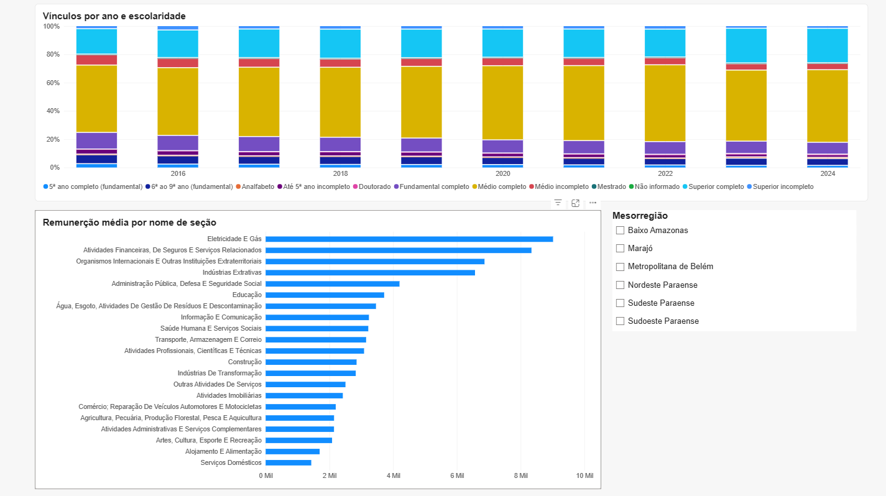
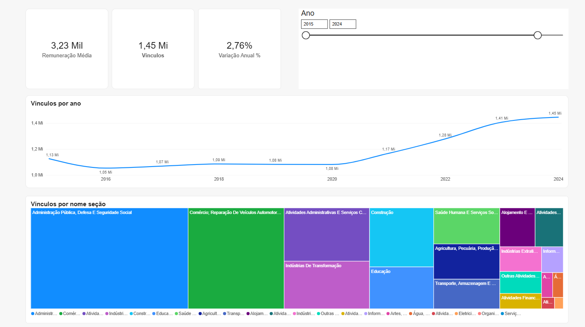

O agro do Pará mais que triplicou em valor. O emprego formal, não.
Um pipeline de dados público, do microdado bruto ao dashboard, para responder: como evoluiu o emprego formal nos municípios do Pará na última década, por setor e escolaridade, e onde o agro gerou mais vagas formais?
Queda em 2016, estagnação até a pandemia, salto a partir de 2021.
O estoque de vínculos ativos em 31 de dezembro saiu de 1,13 mi em 2015, caiu para 1,05 mi em 2016 e ficou parado até 2020. Depois disso, ganhou 365 mil vagas em quatro anos.
Por escolaridade, o ensino médio completo domina, e o superior completo ganha espaço ano a ano. A remuneração média de dezembro de 2024 foi de R$ 3,23 mil (valor nominal).
2025 em tom claro: existe na RAIS, mas fica fora do dashboard porque a produção agrícola (PAM/IBGE) vai só até 2024.
A produção disparou depois de 2020. As vagas formais do agro mal acompanharam.
Cruzando a RAIS com a Produção Agrícola Municipal do IBGE, com 2015 como base 100: em 2024 o valor produzido chegou a 346, e os vínculos formais do agro (CNAE 01, 02 e 03), a 118.
Produzir muito não é empregar com carteira.
Igarapé-Miri, capital do açaí, produziu R$ 13,9 bi em dez anos e tinha só 60 vínculos formais no agro em 2024. Paragominas, com produção parecida, tinha 3.960.
O agro que gera vaga formal é o de grãos e pecuária. Açaí e cacau são, em boa parte, agricultura familiar e extrativismo, com pouco registro em carteira.
De 478 GB de microdados a um modelo estrela testado.
Três páginas no Power BI.



- Salários em reais nominais, sem correção pela inflação.
- A PAM cobre só lavouras (temporárias e permanentes) e vai até 2024; pecuária e extrativismo ficam de fora.
- A RAIS mede só o emprego formal; a informalidade, grande no agro paraense, não aparece.